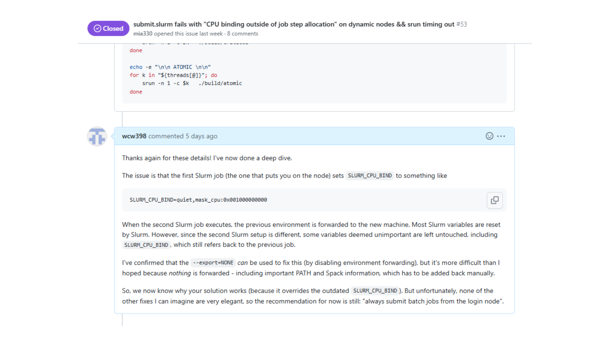

主题：Homework 1 Question 5 复盘 + Example 1 (VTune profiling 入门) + Example 2 (GPU 节点)
Lecture 11 是教授本人主讲的常规课（共 27 页 slides，2026-03-03）。前半部分复盘 HW1 Q5——让学生自选问题对比 Python 与 C++ 的性能（cross product / 遗传算法 / Conway's Game of Life / Black-Scholes Monte Carlo / 暴力破解口令），看看"Python 慢"这件事到底有多慢。后半部分进入两个新 example：用 Intel VTune 分析 LAMMPS 这种真实大型 C++ 项目的性能热点；以及"认识一下学校 GPU 节点"。
本讲 slides 数量少、每页信息密度不高，所以笔记按"一页一节"组织。Slide 1 是封面、Slide 2–6 是 Setup / Quiz / HW 链接 / Q&A repo 这种纯行政内容，全部跳过；正式内容从 Slide 7（上次 Slurm 问题的 follow-up）开始。

Slide 7 直接贴出了 questions-and-answers repo 上的一个 issue：标题是 "submit.slurm fails with 'CPU binding outside of job step allocation' on dynamic nodes && srun timing out"。一名学生在交互式登录到一个 GPU 节点（dynamic node，用 Open OnDemand 起的会话）之后，又在那个会话里 sbatch submit.sh 提交了第二个作业，结果 srun 直接报 CPU binding 错误并超时。教授（wcw398）几天后回了一条详细解释——这页就是把这个回复贴在了 slides 上，作为对上一讲遗留问题的官方答复。
Slurm 的执行模型是每个 job 启动前会被分配一组环境变量来描述它的资源（哪几个 CPU 核、多少内存等）。其中一个很关键的变量是 SLURM_CPU_BIND，形如：
SLURM_CPU_BIND=quiet,mask_cpu:0x0010000000这个变量告诉新作业"你被允许用这台机器的哪几个 CPU 核"——掩码 0x0010000000 用 bit 位指定核号。
问题出在两层 Slurm 嵌套：
SLURM_CPU_BIND=...M1... 写进当前 shell 的环境。sbatch submit.sh，Slurm 起了第二个作业，调度到节点 N2 + 一组完全不同的 CPU 掩码 M2。Slurm 在启动第二个作业时，大部分 SLURM_* 环境变量它会主动重写成新作业的值。但 SLURM_CPU_BIND 被它判定为"不重要"，于是没有重写，把第一个作业的旧掩码 M1 一路转发给了 N2。N2 上没有匹配 M1 的核，就报 "CPU binding outside of job step allocation"——你试图绑到一些根本没分配给你的核上。
--export=NONE 不是好用的修法显然的修法是让 sbatch 不要转发当前 shell 的环境变量——这就是 sbatch --export=NONE submit.sh 的语义（不导出任何变量给新作业）。但教授解释这个方案"比预想的难"：因为 nothing is forwarded——连 PATH、Spack 设置（指 Spack 包管理器加载的模块路径，课程编译环境靠它）这些必要的变量也不会传过去，新作业里 g++、module load … 都找不到，得手动一条条加回来。代价太高。
"always submit batch jobs from the login node"——永远从 login node 提交 batch 作业。login node 是干净的、不在任何 Slurm 作业里，SLURM_CPU_BIND 这种变量根本不存在，不会被转发污染。流程是：
sbatch submit.sh。srun --pty bash。规则一句话：不要在一个 Slurm 作业里再 sbatch 第二个 Slurm 作业。
SLURM_CPU_BIND 等"不被 Slurm 重写"的变量就会污染新作业，触发 CPU binding 错误。--export=NONE 太激进会丢 PATH/Spack。**实操规则：永远从 login node 提交 batch 作业。**